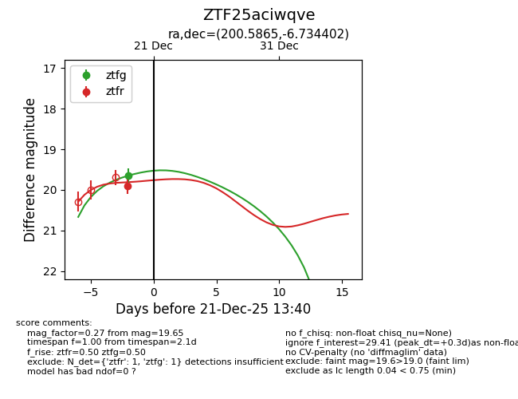
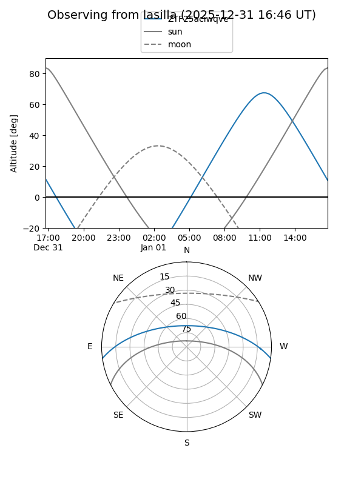
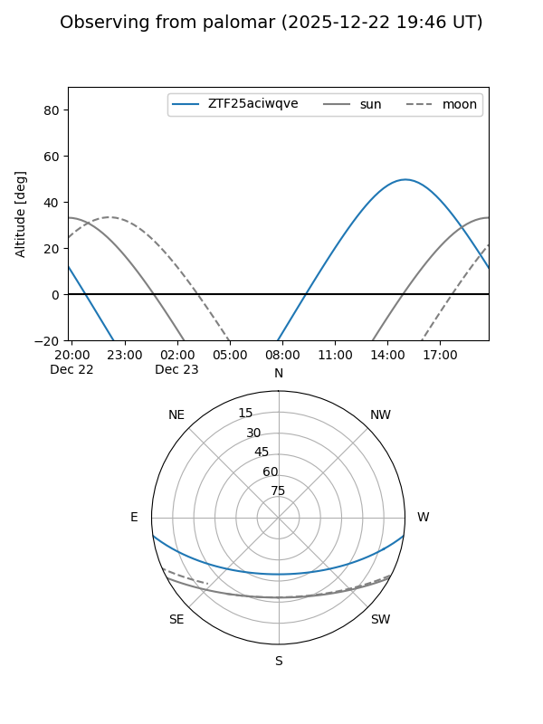

ZTF25aciwqve
Target ZTF25aciwqve at 2025-12-21 13:42
Aliases and brokers:
FINK: fink-portal.org/ZTF25aciwqve
Lasair: lasair-ztf.lsst.ac.uk/objects/ZTF25aciwqve
ALeRCE: alerce.online/object/ZTF25aciwqve
alt names
ZTF25aciwqve (ztf,fink_ztf)
Coordinates:
equatorial (ra, dec) = 200.5865,-6.73440
equatorial (HMS+DMS) = 13:22:20.76,-06:44:03.85
galactic (l, b) = (316.5044,+55.32076)
Flags:
Photometry:
last ztfg=19.65, ztfr=19.91
1 ztfg, 1 ztfr detections
Lightcurve

Visibility


Additional plots